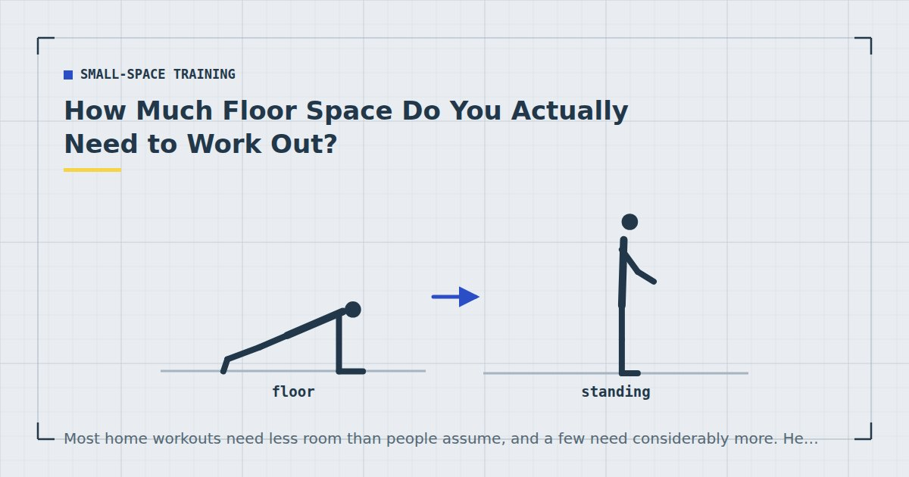

Small-Space Training
How Much Floor Space Do You Actually Need to Work Out?
Most home workouts need less room than people assume, and a few need considerably more. Here are the actual measurements, so you can plan around what you have.

“You only need a small space” is technically true and practically unhelpful, because it does not tell you whether your particular corner will take a set of reverse lunges.
So here are the actual numbers, measured for an adult of average height. Adjust upward slightly if you are tall.
The short answer
A space roughly 2 metres by 1 metre — about the footprint of a standard exercise mat plus a little room around it — covers the large majority of home exercises, including everything in a normal full-body session.
A space of 2 by 2 metres covers essentially everything you might reasonably want to do at home, including travelling movements.
Below about 1.8 by 0.7 metres, you are limited to standing and kneeling work, which is still a legitimate session — see standing workouts.
Space needed, by exercise
| Exercise | Floor space | Notes |
|---|---|---|
| Bodyweight squat | 0.6 × 0.6 m | Standing footprint only |
| Push-up | 1.9 × 0.7 m | Your height plus a little |
| Plank | 1.9 × 0.7 m | Same as push-up |
| Glute bridge | 1.6 × 0.7 m | Knees bent shortens it |
| Dead bug | 1.9 × 1.0 m | Arms move overhead |
| Reverse lunge | 1.6 × 0.8 m | Front to back |
| Bulgarian split squat | 1.5 × 0.8 m | Plus a surface behind |
| Mountain climber | 1.9 × 0.7 m | Same as push-up |
| Bear crawl | 2.5 × 0.8 m | Travelling; can go back and forth |
| Lateral skater step | 1.0 × 2.0 m | Side to side is the constraint |
| Inverted row under a table | 2.0 × 1.0 m | Including the table footprint |
| Pike push-up | 1.6 × 0.7 m | Feet walk in |
The pattern: almost everything is bounded by your height lying down, roughly 1.9 metres, and about 0.7 to 1.0 metres of width. Only travelling and lateral movements need more.
What fits in a mat-sized space
A standard exercise mat is about 1.8 by 0.6 metres. With that and nothing more, you can do:
- Squats, split squats, reverse lunges (with the mat lengthways)
- Push-ups and all variations
- Planks, side planks, dead bugs, hollow holds
- Glute bridges and single-leg bridges
- Pike push-ups
- Mountain climbers and shoulder taps
That is one movement from each of the five patterns except pulling, which needs something to pull against rather than floor space — see rows at home. A complete strength session fits on a mat, which is the point behind the 15-minute full-body workout.
What does not fit: bear crawls, lateral skater steps, and anything travelling.
Ceiling height
Rarely a constraint for strength work and occasionally one for anything overhead.
Standing with arms overhead needs roughly your height plus 60 centimetres — about 2.4 metres for someone 1.8 metres tall. Standard UK and US ceilings at 2.4 metres are therefore borderline for overhead reaching, and genuinely restrictive for anything involving a jump or a handstand.
If your ceilings are low, the workarounds are in low-ceiling workouts. Note that a doorway pull-up bar needs enough clearance above it for your head, which is a separate question covered in the doorway pull-up bar guide.
Nearly every home exercise is bounded by the same number: your height lying down.
Finding space you did not know you had
Most people assess their available space while standing in the middle of a furnished room, which is the worst possible vantage point.
The hallway. Usually the longest uninterrupted floor in a flat, and almost always ignored. Frequently the only place a bear crawl or a lateral movement fits.
Beside the bed. A strip of floor that exists in every bedroom and is usually exactly mat-sized.
The space a sofa occupies. Pushing a two-seater back by half a metre for twenty minutes is not a renovation. If moving furniture is the barrier, that is a friction problem rather than a space problem, and it is worth solving — see training in a studio flat.
Diagonally. The diagonal of a room is longer than either wall. For a single mat-length exercise, a diagonal placement often fits where a square one does not.
Planning a session around your room
Measure your available space once, write the two numbers down, and choose exercises that fit. This takes five minutes and removes a recurring source of friction.
If you have less than 1.8 metres of length, build the session from standing and kneeling exercises: squats, split squats, wall push-ups, standing hinges, kneeling planks.
If you have 1.8 by 0.7 metres, you can run a complete strength session. This is the common case.
If you have 2 by 2 metres or more, everything is available including conditioning work with lateral and travelling movements — see no-jump cardio.
Adult activity guidance says nothing about floor area,1 and the muscle-strengthening half of it is comfortably achievable in a mat-sized space. Small rooms limit which exercises you choose, not whether the training works.
The constraints that are not floor space
Floor area is the constraint people measure and often not the one that actually stops them. Three others matter as much, and all three are worth checking before you conclude your room is too small.
Floor surface. A 2-metre space on a hard tiled floor is less usable than a smaller one on carpet, because floor work becomes uncomfortable and gets quietly dropped from the session. Comfort is not a luxury here — the exercises that get skipped are almost always the floor-based core and glute work. The trade-offs between surfaces are covered in carpet vs hard floor.
What is above and beside you. A low light fitting, a shelf at head height or a radiator beside your mat all remove exercises more effectively than a missing half-metre of floor. Radiators are the common one: a mat placed alongside one makes reverse lunges and lateral movements genuinely unpleasant.
Setup friction. If using your space requires moving a coffee table every session, you have a space that works on paper and fails in practice. The realistic test is not whether the exercises fit but whether you will still be clearing that table in week six. If the answer is no, either find a spot that needs no clearing or accept a narrower exercise selection in exchange for zero setup — the reasoning behind that trade is in setting up a home gym corner.
Space and noise are different problems
Worth separating, because people often conflate them. A large room does not make you quieter, and a small one does not make you louder. What determines transmitted noise is impact, floor construction and where in the room you are standing — a mat near a supporting wall is measurably quieter than the same mat in the middle of the same floor.
If your actual constraint is neighbours rather than square metres, the exercise selection changes for entirely different reasons, and quiet home workouts is the more useful starting point than this page.
Where to go next
For the complete approach to training in a flat, see the guide to working out in a small apartment. For setting up a permanent corner, see setting up a home gym corner.
Frequently asked questions
How much space do you need to work out at home?
About 2 metres by 1 metre covers the large majority of home exercises, including a complete full-body strength session. 2 by 2 metres covers essentially everything, including travelling and lateral movements.
Can you work out in a small bedroom?
Yes. Almost every home exercise is bounded by your height lying down — roughly 1.9 metres — and about 0.7 metres of width. The strip of floor beside a bed is usually exactly the right size.
What exercises can I do on just a yoga mat?
Squats, split squats, reverse lunges, all push-up variations, planks, dead bugs, glute bridges, pike push-ups and mountain climbers. That covers four of the five movement patterns; only pulling needs something beyond the mat.
How high does the ceiling need to be to work out?
For standing overhead reaching, roughly your height plus 60 centimetres — about 2.4 metres for someone 1.8 metres tall. Standard ceilings are borderline for overhead work and genuinely restrictive for jumping or handstands.
What if I do not have enough space to lie down?
Build the session from standing and kneeling exercises: squats, split squats, wall or counter push-ups, standing hip hinges and kneeling planks. It is a narrower session but a legitimate one.
Sources and further reading
- World Health Organization. WHO Guidelines on Physical Activity and Sedentary Behaviour. 2020.
- NHS. Physical activity guidelines for adults aged 19 to 64.
- NHS. Strength and Flex exercise plan.
- MedlinePlus, U.S. National Library of Medicine. Exercise and Physical Fitness.
Comments
Comments are not enabled yet. Add a hosted comment embed (Disqus, Commento, Giscus) inside this container when you are ready.